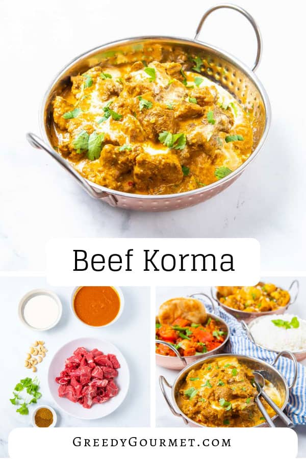
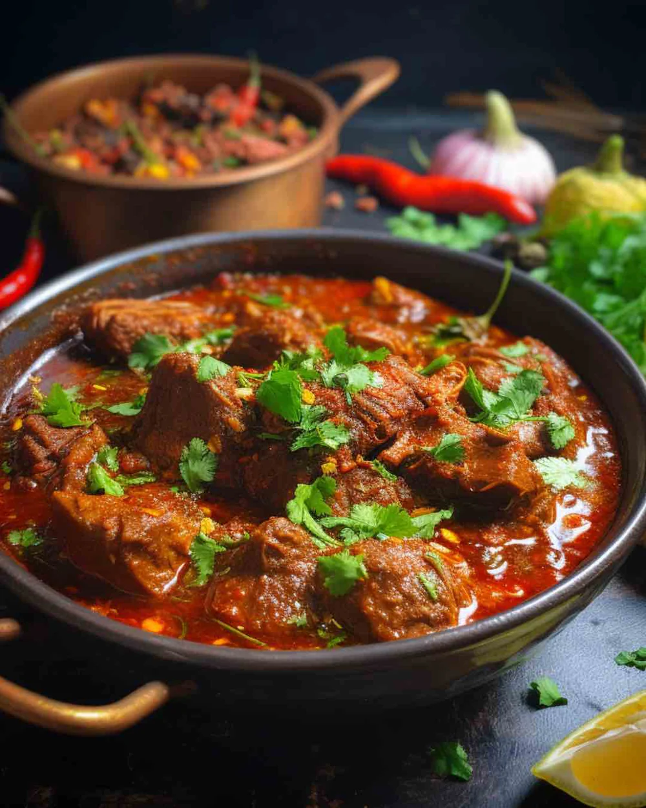
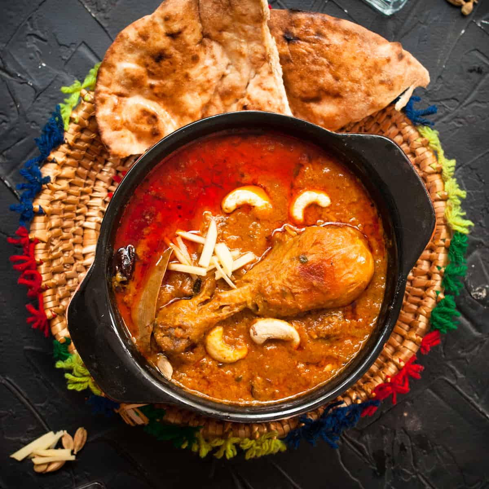

Ingredients:
- 1 kg beef, cut into pieces
- 2 onions, thinly sliced
- 1 cup yogurt
- 1 tablespoon ginger-garlic paste
- 1/2 cup fried onions
- 1/4 cup oil or ghee
- 1 teaspoon cumin seeds
- 1 teaspoon coriander powder
- 1/2 teaspoon turmeric powder
- 1/2 teaspoon garam masala
- Chopped coriander leaves for garnish
- Ginger julienne for garnish
- Salt to taste
Instructions:
- In a large pot, heat oil or ghee over medium heat.
- Add cumin seeds and let them splutter.
- Add thinly sliced onions and sauté until golden brown.
- Add ginger-garlic paste and cook until the raw smell disappears.
- Add beef pieces and brown them on all sides.
- Once the beef is browned, add fried onions, cumin seeds, coriander powder, turmeric powder, and
salt.
Mix well.
- Whisk yogurt and add it to the pot. Stir continuously to avoid curdling.
- Cover the pot and let the beef cook on low heat until tender, stirring occasionally.
- Add garam masala and adjust salt if needed. Cook for an additional 5-10 minutes.
- Garnish with chopped coriander leaves and ginger julienne.
- Serve hot with rice or naan.
Back to Home